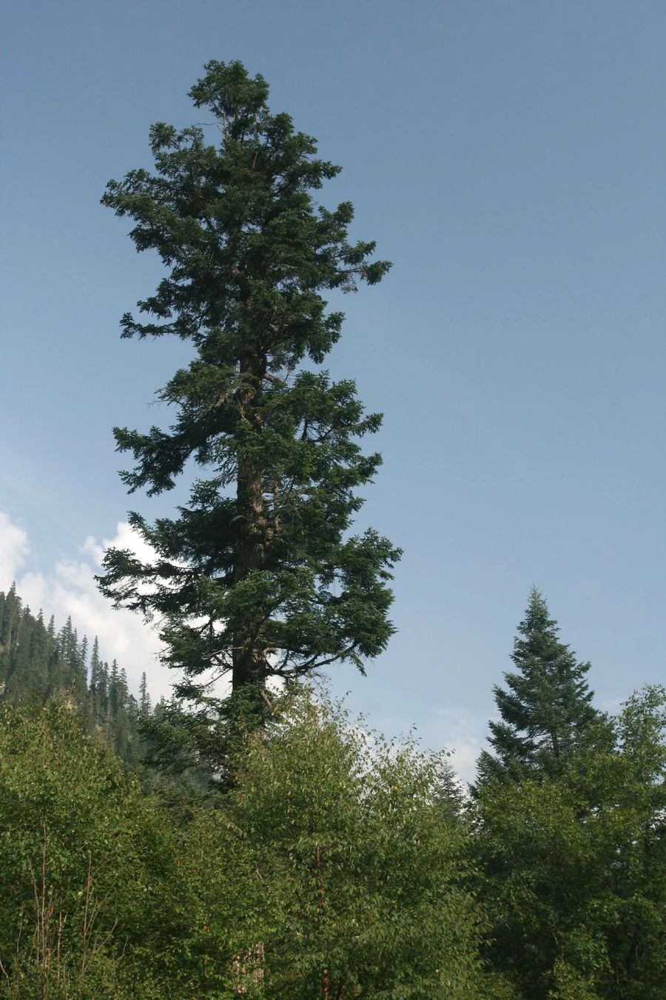

乔木 · 植物界
岷江冷杉 Abies fargesii

松科冷杉属常绿大乔木，中国特有，球果直立、叶背有两条白粉气孔带，是岷江上游与川西高山森林的主体树种。
- 分类
- 门裸子植物门纲松柏纲目松柏目科松科属冷杉属
- 栖息环境
- 海拔 2000–3800 米的山地，喜温凉湿润、多云雾的气候
- 地理分布
- 中国四川、甘肃、陕西、湖北等地，以岷江上游最为集中
- 保护级别
- 中国国家二级保护野生植物；历史采伐使野生种群下降
物种志
岷江冷杉为常绿乔木，高可达 40 米，胸径可达 1 米，树皮灰褐色并纵裂成块片，小枝淡黄褐色，无毛或微被毛。叶片条形、扁平，长 1.5–3 厘米，先端钝尖，叶背有两条白色气孔带。雌雄同株，球果直立、卵状圆柱形，长 5–8 厘米，成熟时紫褐色至暗褐色，种鳞扇形，种子具翅。
本种为中国特有种，分布于四川、甘肃、陕西、湖北等地，以岷江上游、大渡河流域最为集中，生于海拔 2000–3800 米的山地，常与云杉、桦木组成针阔混交林或暗针叶林，喜温凉湿润、多云雾的气候与深厚肥沃的酸性土壤。它是长江上游重要的水源涵养树种，木材可供建筑、枕木与造纸。因历史采伐与栖息地破碎化，野生种群有所下降，被列为国家二级保护野生植物。
形态与习性
- 株高可达 40 米，胸径可达 1 米
- 花期4–5 月，雌球花生于枝顶
- 球果成熟10 月，球果直立、紫褐色
- 光照耐阴，幼树能在林下更新
- 水分喜湿润多雾，适宜年降水量 900 mm 以上
- 土壤深厚肥沃的酸性山地棕壤
- 主要用途水源涵养、建筑与枕木用材
趣味知识
- 岷江冷杉是川西高山峡谷区森林的主体树种之一，木材产量大。
- 它的叶背两条白色气孔带在阳光下发亮，是野外识别的要点。
- 冷杉林截留云雾、减缓径流，对长江上游的水土保持至关重要。
- 岷江冷杉生长缓慢，天然林更新往往需要数十年时间。